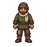
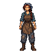
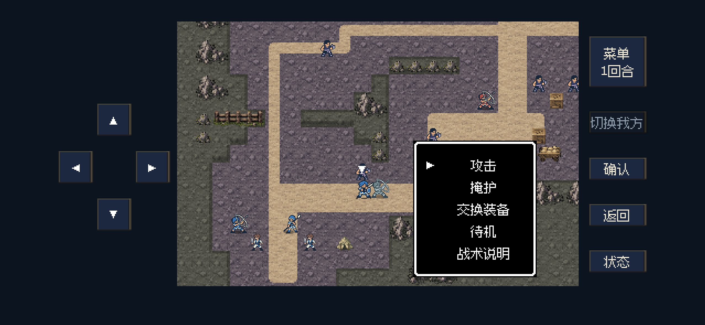
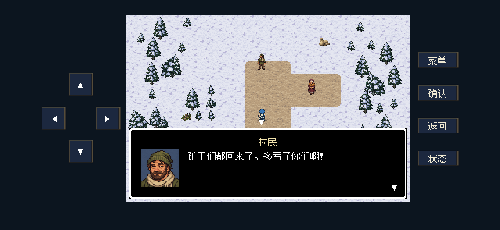
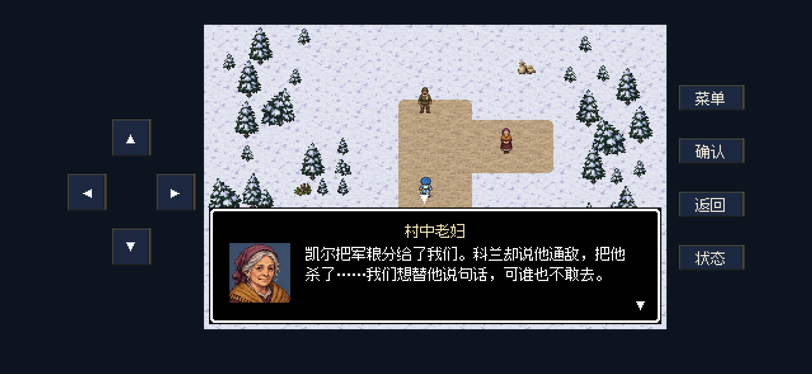
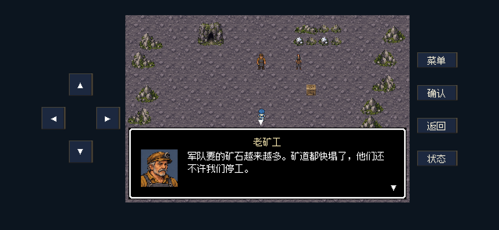
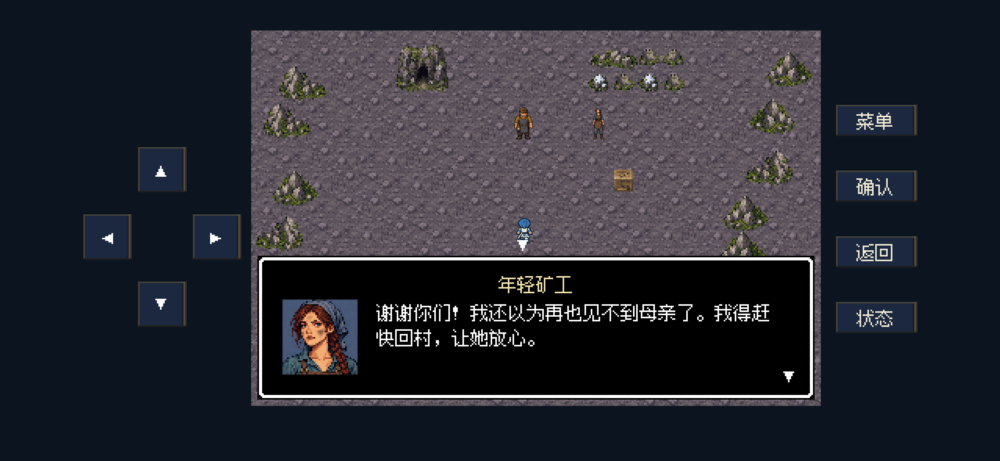

村民男子
绿帽与围巾 · H07

2026-10-25 · 台词修订版。战后村民、矿工和诊所对白已按“外传”的简短、直白口吻重写。4个平民身份各有专属正面待机图与对话头像；贝克入队后由获救矿工接替。未更新iPhone。
静止人物只使用一张待机图，未接入行走动画。人物图在地图显示为24×24逻辑画幅，头像48×48；下方放大便于对照身份。
绿帽与围巾 · H07

紫红头巾与披肩 · H07
矿帽与灰围裙 · H08
蓝头巾与长辫 · H08

内置图像工具生成 → 切图 → 最近邻缩放 → 无损优化。原始图留在隔离源目录。完整提示词 · 尺寸、字节数与哈希
真正邀请成功时播放一次，暂停当前BGM；两秒结束后从原位置续播。取消、失败、重复邀请及读取存档不会播放，音乐静音时也不会播放。
新写旋律＋本地离线Stable Audio 3音色层；无歌词，非循环，2.000秒。已检查解码、电平、淡出及Godot触发／恢复；本轮没有人工听审结论。音频检查
使用2556×1179横屏和iPhone16安全区参数。49项无窗口定向检查通过，后台画面文字与按钮安全区域检查通过。当前使用既有S11胜利检查点验证战后流程，没有重复进行整章测试。
本次仅刷新4张对白有变化的画面；按钮排序画面沿用。村民直接说消息或请求，矿工说明遭遇，贝克用两句话答应同行；去掉刻意抒情和公文用语。台词修改依据与例子 · 本次快速检查




